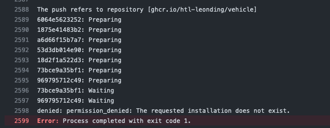

1. Create a Simple Quarkus Application
1.1. Create the Project
-
Configure on quarkus.io and download as zip or push to github
-
Alternatively create the project per maven
| You have to install maven before |
-
Check the newest quarkus version https://quarkus.io/
mvn io.quarkus.platform:quarkus-maven-plugin:3.0.1.Final:create \
-DprojectGroupId=at.htlleonding.vehicle \
-DprojectArtifactId=vehicle-demo \
-Dextensions="resteasy-reactive, resteasy-reactive-jackson, smallrye-openapi"1.3. Manual Check of the Running Project
1.4. Build a jar-File
./mvnw clean package ls -lh ./target
-rw-r--r-- 1 stuetz staff 5.4K Mar 14 12:08 quarkus-docker-gh-actions-demo-0.1.0-SNAPSHOT.jar
-
we want to rename the jar-file to get rid of
demo. -
→ we will rename the jar-file
1.5. Rename the jar-File
//...
<build>
<finalName>vehicle-${version}</finalName>
<plugins>
//...
</plugins>
</build>-
There is also a property quarkus.package.output-name
./mvnw clean package -DskipTests
It produces the quarkus-run.jar file in the target/quarkus-app/ directory.
Be aware that it’s not an uber-jar as the dependencies are copied into the target/quarkus-app/lib/ directory.
ls -l target
-rw-r--r-- 1 stuetz staff 173K Apr 29 13:30 vehicle-1.0.0-SNAPSHOT.jar
java -jar target/vehicle-1.0.0-SNAPSHOT.jar
no main manifest attribute, in target/vehicle-1.0.0-SNAPSHOT.jar
tree target/quarkus-app target/quarkus-app ├── app │ └── vehicle-1.0.0-SNAPSHOT.jar ├── lib │ ├── boot │ │ ├── ... │ │ ├── io.quarkus.quarkus-bootstrap-runner-3.0.1.Final.jar │ │ └── ... │ └── main │ ├── ... │ ├── com.fasterxml.jackson.core.jackson-annotations-2.14.2.jar │ └── ... ├── quarkus │ ├── generated-bytecode.jar │ ├── quarkus-application.dat │ └── transformed-bytecode.jar ├── quarkus-app-dependencies.txt └── quarkus-run.jar
java -jar target/quarkus-app/quarkus-run.jar
-
the libraries are in the lib-folder available
2. Run a local Docker Container
-
To dockerize the quarkus application into a docker image, there are several options available:
-
Usage of a Dockerfile
-
Using a library (i.e. jib) to build an image
-
…
-
2.1. Using a Dockerfile
-
When creating a quarkus project, you get pre-configured Dockerfiles
-
Please notice:
-
It is possible to package the quarkus app with all dependent libraries. This is called an uber-jar.
-
But it is more performant to create a layer for the libraries and a layer for the quarkus app. So it is very fast, when you only have changes in the quarkus app. Only a very small layer would be created after the code changes.
-
so the pre-configured Dockerfiles in
src/main/dockerthe layers
-
2.1.1. Create the jar-file
./mvnw clean package
-rw-r--r-- 1 stuetz staff 173K Apr 29 13:42 vehicle-1.0.0-SNAPSHOT.jar
2.1.2. Create the Docker Image
docker build -f src/main/Docker/Dockerfile.jvm -t htl-leonding/vehicle . docker image ls
REPOSITORY TAG IMAGE ID CREATED SIZE htl-leonding/vehicle latest 49b4b82d75fa 7 seconds ago 440MB
2.1.3. Start the Docker Container
docker run -i --rm -p 8080:8080 htl-leonding/vehicle
In the Dockerfile.jvm you find in the comments all commands
|
result
Starting the Java application using /opt/jboss/container/java/run/run-java.sh ... INFO exec java -Dquarkus.http.host=0.0.0.0 -Djava.util.logging.manager=org.jboss.logmanager.LogManager -XX:MaxRAMPercentage=50.0 -XX:+UseParallelGC -XX:MinHeapFreeRatio=10 -XX:MaxHeapFreeRatio=20 -XX:GCTimeRatio=4 -XX:AdaptiveSizePolicyWeight=90 -XX:+ExitOnOutOfMemoryError -cp "." -jar /deployments/quarkus-run.jar __ ____ __ _____ ___ __ ____ ______ --/ __ \/ / / / _ | / _ \/ //_/ / / / __/ -/ /_/ / /_/ / __ |/ , _/ ,< / /_/ /\ \ --\___\_\____/_/ |_/_/|_/_/|_|\____/___/ 2023-04-29 11:54:21,899 INFO [io.quarkus] (main) vehicle-demo 1.0.0-SNAPSHOT on JVM (powered by Quarkus 3.0.1.Final) started in 0.425s. Listening on: http://0.0.0.0:8080 2023-04-29 11:54:21,917 INFO [io.quarkus] (main) Profile prod activated. 2023-04-29 11:54:21,917 INFO [io.quarkus] (main) Installed features: [cdi, resteasy-reactive, resteasy-reactive-jackson, smallrye-context-propagation, smallrye-openapi, vertx]
Use the REST-client for checking if the app works.
2.2. Using Jib
-
There is a Library called Jib (Java Image Builder) from Google which makes it possible to build a Docker image without installing Docker
-
Fortunately Quarkus has already implemented Jib
2.2.1. Add Jib-Dependency to pom.xml
./mvnw quarkus:add-extension -Dextensions='container-image-jib'
2.2.2. Configure application.properties
quarkus.container-image.build=true (1)
quarkus.container-image.group=htl-leonding
quarkus.container-image.name=vehicle
quarkus.container-image.tag=latest
quarkus.jib.ports=8080| 1 | this property is mandatory for building the docker image |
2.2.3. Compile App and Build Image
./mvnw clean package
result
[INFO] Scanning for projects...
[WARNING]
[WARNING] Some problems were encountered while building the effective model for at.htlleonding.vehicle:vehicle-demo:jar:1.0.0-SNAPSHOT
[WARNING] The expression ${version} is deprecated. Please use ${project.version} instead.
[WARNING] The expression ${version} is deprecated. Please use ${project.version} instead.
[WARNING]
[WARNING] It is highly recommended to fix these problems because they threaten the stability of your build.
[WARNING]
[WARNING] For this reason, future Maven versions might no longer support building such malformed projects.
[WARNING]
[INFO]
[INFO] ----------------< at.htlleonding.vehicle:vehicle-demo >-----------------
[INFO] Building vehicle-demo 1.0.0-SNAPSHOT
[INFO] from pom.xml
[INFO] --------------------------------[ jar ]---------------------------------
[INFO]
[INFO] --- maven-clean-plugin:2.5:clean (default-clean) @ vehicle-demo ---
[INFO] Deleting /Users/stuetz/SynologyDrive/htl/skripten/themen/github/quarkus-docker-gh-actions-demo/labs/vehicle-demo/target
[INFO]
[INFO] --- maven-resources-plugin:2.6:resources (default-resources) @ vehicle-demo ---
[INFO] Using 'UTF-8' encoding to copy filtered resources.
[INFO] Copying 2 resources
[INFO]
[INFO] --- quarkus-maven-plugin:3.0.1.Final:generate-code (default) @ vehicle-demo ---
[INFO]
[INFO] --- maven-compiler-plugin:3.11.0:compile (default-compile) @ vehicle-demo ---
[INFO] Changes detected - recompiling the module! :source
[INFO] Compiling 1 source file with javac [debug release 17] to target/classes
[INFO]
[INFO] --- quarkus-maven-plugin:3.0.1.Final:generate-code-tests (default) @ vehicle-demo ---
[INFO]
[INFO] --- maven-resources-plugin:2.6:testResources (default-testResources) @ vehicle-demo ---
[INFO] Using 'UTF-8' encoding to copy filtered resources.
[INFO] skip non existing resourceDirectory /Users/stuetz/SynologyDrive/htl/skripten/themen/github/quarkus-docker-gh-actions-demo/labs/vehicle-demo/src/test/resources
[INFO]
[INFO] --- maven-compiler-plugin:3.11.0:testCompile (default-testCompile) @ vehicle-demo ---
[INFO] Changes detected - recompiling the module! :dependency
[INFO] Compiling 2 source files with javac [debug release 17] to target/test-classes
[INFO]
[INFO] --- maven-surefire-plugin:3.0.0:test (default-test) @ vehicle-demo ---
[INFO] Using auto detected provider org.apache.maven.surefire.junitplatform.JUnitPlatformProvider
[INFO]
[INFO] -------------------------------------------------------
[INFO] T E S T S
[INFO] -------------------------------------------------------
[INFO] Running at.htlleonding.vehicle.GreetingResourceTest
2023-04-29 14:16:32,049 INFO [io.quarkus] (main) vehicle-demo 1.0.0-SNAPSHOT on JVM (powered by Quarkus 3.0.1.Final) started in 1.041s. Listening on: http://localhost:8081
2023-04-29 14:16:32,050 INFO [io.quarkus] (main) Profile test activated.
2023-04-29 14:16:32,051 INFO [io.quarkus] (main) Installed features: [cdi, resteasy-reactive, resteasy-reactive-jackson, smallrye-context-propagation, smallrye-openapi, swagger-ui, vertx]
[INFO] Tests run: 1, Failures: 0, Errors: 0, Skipped: 0, Time elapsed: 2.703 s - in at.htlleonding.vehicle.GreetingResourceTest
2023-04-29 14:16:32,713 INFO [io.quarkus] (main) vehicle-demo stopped in 0.098s
[INFO]
[INFO] Results:
[INFO]
[INFO] Tests run: 1, Failures: 0, Errors: 0, Skipped: 0
[INFO]
[INFO]
[INFO] --- maven-jar-plugin:2.4:jar (default-jar) @ vehicle-demo ---
[INFO] Building jar: /Users/stuetz/SynologyDrive/htl/skripten/themen/github/quarkus-docker-gh-actions-demo/labs/vehicle-demo/target/vehicle-1.0.0-SNAPSHOT.jar
[INFO]
[INFO] --- quarkus-maven-plugin:3.0.1.Final:build (default) @ vehicle-demo ---
[INFO] [io.quarkus.container.image.jib.deployment.JibProcessor] Starting (local) container image build for jar using jib.
[INFO] [io.quarkus.container.image.jib.deployment.JibProcessor] Using docker to run the native image builder
[WARNING] [io.quarkus.container.image.jib.deployment.JibProcessor] Base image 'registry.access.redhat.com/ubi8/openjdk-17-runtime:1.15' does not use a specific image digest - build may not be reproducible
[INFO] [io.quarkus.container.image.jib.deployment.JibProcessor] Using base image with digest: sha256:f921cf1f9147e4b306908f3bcb61dd215b4a51970f8db560ede02ee6a492fa99
[INFO] [io.quarkus.container.image.jib.deployment.JibProcessor] Container entrypoint set to [java, -Djava.util.logging.manager=org.jboss.logmanager.LogManager, -jar, quarkus-run.jar]
[INFO] [io.quarkus.container.image.jib.deployment.JibProcessor] Created container image htl-leonding/vehicle (sha256:ea1f3d84df3221e0ce05527735b558bf410132712113a50f6a59064c7bcdaf1e)
[INFO] [io.quarkus.deployment.QuarkusAugmentor] Quarkus augmentation completed in 5496ms
[INFO] ------------------------------------------------------------------------
[INFO] BUILD SUCCESS
[INFO] ------------------------------------------------------------------------
[INFO] Total time: 10.570 s
[INFO] Finished at: 2023-04-29T14:16:38+02:00
[INFO] ------------------------------------------------------------------------
docker image ls
REPOSITORY TAG IMAGE ID CREATED SIZE htl-leonding/vehicle latest de4acf85c454 4 minutes ago 382MB
3. Run local docker-compose
-
Now we have the docker image locally.
3.1. Create docker-compose.yaml
-
We need a
docker-compose.yaml- file
services:
backend:
image: htl-leonding/vehicle:latest
ports:
- "8080:8080"
networks:
- vehicle
networks:
vehicle:
name: quarkus-vehicle-network4. Run a local docker-compose with Database
4.1. Add Dependencies for the database
./mvnw quarkus:add-extension -Dextensions='jdbc-postgresql, hibernate-orm-panache'
4.2. Add code for accessing database
Vehicle.java
package at.htlleonding.vehicle;
import jakarta.persistence.Entity;
import jakarta.persistence.GeneratedValue;
import jakarta.persistence.GenerationType;
import jakarta.persistence.Id;
@Entity
public class Vehicle {
@Id @GeneratedValue(strategy = GenerationType.IDENTITY)
private
Long id;
private String brand;
private String model;
public Long getId() {
return id;
}
public void setId(Long id) {
this.id = id;
}
public String getBrand() {
return brand;
}
public void setBrand(String brand) {
this.brand = brand;
}
public String getModel() {
return model;
}
public void setModel(String model) {
this.model = model;
}
@Override
public String toString() {
return String.format("%s %s", brand, model);
}
}VehicleDto.java
package at.htlleonding.vehicle;
public record VehicleDto (Long id, String brand, String model) {}VehicleRepository.java
package at.htlleonding.vehicle;
import io.quarkus.hibernate.orm.panache.PanacheRepository;
import jakarta.enterprise.context.ApplicationScoped;
@ApplicationScoped
public class VehicleRepository implements PanacheRepository<Vehicle> {
}VehicleResource.java
package at.htlleonding.vehicle;
import jakarta.inject.Inject;
import jakarta.ws.rs.GET;
import jakarta.ws.rs.Path;
import jakarta.ws.rs.Produces;
import jakarta.ws.rs.core.MediaType;
import java.util.List;
@Path("/vehicle")
public class VehicleResource {
@Inject
VehicleRepository vehicleRepository;
@GET
@Produces(MediaType.APPLICATION_JSON)
public List<Vehicle> listAll() {
return vehicleRepository.listAll();
}
}http-requests/requests.http
GET http://localhost:8080/hello ### GET http://localhost:8080/vehicle ####
src/main/resources/insert.sql
insert into vehicle (brand, model) values ('Opel', 'Kadett');
insert into vehicle (brand, model) values ('VW', 'Käfer');add assertj-core to dependencies in pom.xml
<dependencies>
...
<dependency>
<groupId>org.assertj</groupId>
<artifactId>assertj-core</artifactId>
<version>3.24.2</version>
<scope>test</scope>
</dependency>
</dependencies>src/main/test/java/at/htlleonding/vehicle/VehicleResourceTest.java
package at.htlleonding.vehicle;
import io.quarkus.test.junit.QuarkusTest;
import org.junit.jupiter.api.Test;
import java.util.LinkedList;
import java.util.List;
import static io.restassured.RestAssured.given;
import static org.assertj.core.api.Assertions.assertThat;
@QuarkusTest
public class VehicleResourceTest {
@Test
public void testHelloEndpoint() {
List<VehicleDto> expectedVehicles = List.of(
new VehicleDto(2L, "VW", "Käfer"),
new VehicleDto(1L, "Opel", "Kadett")
);
List<VehicleDto> retrievedVehicles = new LinkedList<>();
retrievedVehicles = given()
.when().get("/vehicle")
.then()
.statusCode(200)
.extract().body().jsonPath().getList(".", VehicleDto.class);
assertThat(retrievedVehicles).hasSize(2)
.usingRecursiveComparison()
.ignoringFields("id")
.ignoringCollectionOrder()
.isEqualTo(expectedVehicles);
}
}src/main/resources/application.properties
# datasource configuration
quarkus.datasource.db-kind = postgresql
quarkus.datasource.username = app
quarkus.datasource.password = app
quarkus.datasource.jdbc.url = jdbc:postgresql://localhost:5432/db
# drop and create the database at startup (use `update` to only update the schema)
quarkus.hibernate-orm.database.generation=drop-and-create
%prod.quarkus.hibernate-orm.sql-load-script=import.sql (1)
#quarkus.package.type=uber-jar
quarkus.container-image.build=true
quarkus.container-image.group=htl-leonding
quarkus.container-image.name=vehicle
quarkus.container-image.tag=latest
quarkus.jib.ports=8080| 1 | For importing data in prod-profile |
4.3. Build the docker image
./mvnw clean package -DskipTests -Dquarkus.container-image.build=true
-
Because the ide is running on linux/arm64/v8 - architecture, we have to tell jib to create an linux/amd64 image →
-Dquarkus.container-image.build=true
4.4. Create the docker-compose.yaml for development
-
For starting only the database and pgadmin.
-
You could also use dev-services for starting a database.
-
-
The quarkus-app ist startet in dev-mode w/o docker.
docker-compose-postgres.yaml
services:
db:
container_name: postgres
image: postgres:15.2-alpine
restart: unless-stopped
environment:
POSTGRES_USER: app
POSTGRES_PASSWORD: app
POSTGRES_DB: db
ports:
- 5432:5432
volumes:
- ./db-postgres/db:/var/lib/postgresql/data
- ./db-postgres/import:/import
networks:
- postgres
# adminer:
# image: adminer
# restart: always
# ports:
# - 8090:8080
# https://github.com/khezen/compose-postgres/blob/master/docker-compose.yml
pgadmin:
container_name: pgadmin
image: dpage/pgadmin4:7.0
environment:
PGADMIN_DEFAULT_EMAIL: ${PGADMIN_DEFAULT_EMAIL:-pgadmin4@pgadmin.org}
PGADMIN_DEFAULT_PASSWORD: ${PGADMIN_DEFAULT_PASSWORD:-admin}
PGADMIN_CONFIG_SERVER_MODE: 'False'
volumes:
- ./db-postgres/pgadmin:/root/.pgadmin
ports:
- 8090:80
networks:
- postgres
restart: unless-stopped
networks:
postgres:
driver: bridgedocker compose -f docker-compose-postgres.yaml up -d
docker compose -f docker-compose-postgres.yaml down
4.5. Create the docker-compose.yaml for production
services:
db:
container_name: postgres
image: postgres:15.2-alpine
restart: unless-stopped
environment:
POSTGRES_USER: app
POSTGRES_PASSWORD: app
POSTGRES_DB: db
ports:
- 5432:5432
volumes:
- ./db-postgres/db:/var/lib/postgresql/data
- ./db-postgres/import:/import
networks:
- vehicle
# https://github.com/khezen/compose-postgres/blob/master/docker-compose.yml
pgadmin:
container_name: pgadmin
image: dpage/pgadmin4:7.0
environment:
PGADMIN_DEFAULT_EMAIL: ${PGADMIN_DEFAULT_EMAIL:-pgadmin4@pgadmin.org}
PGADMIN_DEFAULT_PASSWORD: ${PGADMIN_DEFAULT_PASSWORD:-admin}
PGADMIN_CONFIG_SERVER_MODE: 'False'
volumes:
- ./db-postgres/pgadmin:/root/.pgadmin
ports:
- 8090:80
networks:
- vehicle
restart: unless-stopped
backend:
image: htl-leonding/vehicle:latest
restart: unless-stopped
environment:
QUARKUS_DATASOURCE_JDBC_URL: jdbc:postgresql://db:5432/db
QUARKUS_DATASOURCE_USERNAME: app
QUARKUS_DATASOURCE_PASSWORD: app
ports:
- "8080:8080"
depends_on:
- db
networks:
- vehicle
networks:
vehicle:
name: quarkus-vehicle-network
driver: bridgedocker compose -f docker-compose-all-services.yaml up -d
docker compose -f docker-compose-all-services.yaml down
5. CI - Deploy to github-packages
-
sources:
5.1. Create a basic pipeline
-
When you create a quarkus-project with a jib-dependency, you get a sample
ci.yml.
## A basic GitHub Actions workflow for your Quarkus application.
name: CI build
on:
push:
branches: [ main ]
pull_request:
branches: [ main ]
workflow_dispatch:
jobs:
build:
runs-on: ubuntu-latest
steps:
- name: Checkout gh-repo
uses: actions/checkout@v3
- name: Set up JDK 17
uses: actions/setup-java@v3
with:
java-version: 17
distribution: temurin
cache: maven
- name: Build
run: |
./mvnw package -B
docker image ls-
After pushing this file, the first error occurs
-
we could skip tests, or
-
we use testcontainers
-
so we configure quarkus to use testcontainers in test-profile
-
# datasource configuration
%dev.quarkus.datasource.db-kind = postgresql (1)
%dev.quarkus.datasource.username = app
%dev.quarkus.datasource.password = app
%dev.quarkus.datasource.jdbc.url = jdbc:postgresql://localhost:5432/db
%prod.quarkus.datasource.db-kind = postgresql (2)
%prod.quarkus.datasource.username = app
%prod.quarkus.datasource.password = app
%prod.quarkus.datasource.jdbc.url = jdbc:postgresql://localhost:5432/db
# drop and create the database at startup (use `update` to only update the schema)
quarkus.hibernate-orm.database.generation=drop-and-create
%prod.quarkus.hibernate-orm.sql-load-script=import.sql
#quarkus.package.type=uber-jar
quarkus.container-image.build=true
quarkus.container-image.group=htl-leonding
quarkus.container-image.registry=ghcr.io
quarkus.container-image.name=vehicle
quarkus.container-image.tag=latest
quarkus.jib.ports=8080
%test.quarkus.datasource.devservices.enabled=true (3)| 1 | for dev-profile use local docker-compose-database-service |
| 2 | for prod-profile use local docker-compose-database-service |
| 3 | activate devservices for databases - because we provide only db-credentials for test- and prod-profile, in test-profile we use a postgres-testcontainer |
-
You see, the docker image is built, we can continue to publish this docker image into gh-packages
-
Because using the testcontainer is consuming a lot of github-resources (you normally have to pay), so we will skip tests, while developing the pipeline.
6. Publishing to gh-packages
You can use a GITHUB_TOKEN in a GitHub Actions workflow to delete or restore a package using the REST API, if the token hasadminpermission to the package. Repositories that publish packages using a workflow, and repositories that you have explicitly connected to packages, are automatically grantedadminpermission to packages in the repository.
-
github provides a token to authenticate (Automatic token authentication)
name: CI build
on:
push:
branches: [ main ]
pull_request:
branches: [ main ]
workflow_dispatch:
env:
REGISTRY: ghcr.io
IMAGE_NAME: ${{ github.repository }}
PROJECT_NAME: vehicle
PROJECT_VERSION: latest
jobs:
build-and-push-image:
runs-on: ubuntu-latest
steps:
- name: Checkout gh-repo
uses: actions/checkout@v3
- name: Set up JDK 17
uses: actions/setup-java@v3
with:
java-version: 17
distribution: temurin
cache: maven
- name: Log in to the Container registry
uses: docker/login-action@65b78e6e13532edd9afa3aa52ac7964289d1a9c1
with:
registry: ${{ env.REGISTRY }}
username: ${{ github.actor }}
password: ${{ secrets.MY_GITHUB_TOKEN }}
- name: Build
run: ./mvnw package -DskipTests -B
- name: Push to packages
run: docker push ${{ env.REGISTRY }}/${{ github.actor }}/${{ env.PROJECT_NAME }}:${{ env.PROJECT_VERSION }}-
in the first attempt when using the provided
${{ secrets.GITHUB_TOKEN }}did not work:-
So in the repository a token with package-read-permission was created
-
A repository-scoped secret was created with this token → ${{ secrets.MY_GITHUB_TOKEN }}
-
Now it worked
-
Maybe this happened, because the repository was located in a github-organization
-
-
-
Instead of the Docker-login-action you could login with
-
docker login -u ${{ github.actor }} -p ${{ secrets.MY_GITHUB_TOKEN }} ${{ env.REGISTRY }}
-
-
In the Build-Step you can omit
-DskipTests -
Instead of
docker push …it would be possible to usemvn install- but in this case you have to supply the registry to thepom-file.
6.1. Configure permissions of GITHUB_TOKEN
-
As in GitHub Docs explained, it is possible to modify the default permissions granted to the GITHUB_TOKEN
| This is maybe the better way than creating a new token (MY_GITHUB_TOKEN) |
6.2. Make package public
-
To access the registry →
https://github.com/<your_user_name>?tab=packages